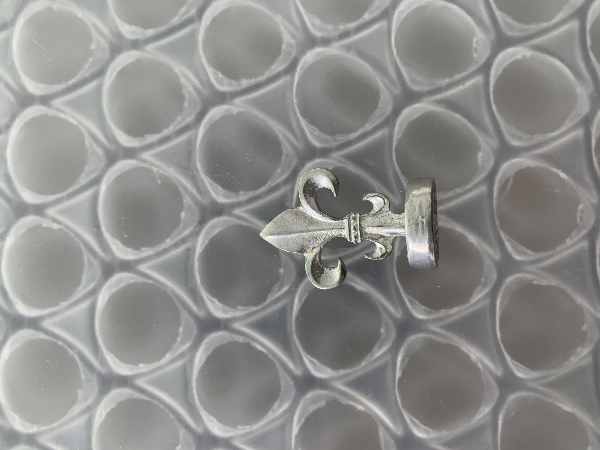

<br>
### Week 3: 3D Printing
This week, we tackled 3D printing. I decided to use this week to improve upon my kinetic sculpture from last week. I thought of a few things that could improve the sculpture, including making bevel gears. However, I decided that, for the type of movement I wanted, I wouldn't actually need bevel gears. Instead, I landed on improving the aesthetics of the sculpture by 3D printing flowers, which I hoped would look better than the cardboard + vinyl flower I used last week. I love tulips, so that's what I'll try to print.
As someone new to Fusion, I had no idea where to start with a complex organic shape like a tulip. I looked up a few tutorials and found [this](https://www.instructables.com/Fusion-360-3D-Printable-Flower/) one, which was a great, in-depth tutorial. I followed it step-by step up through step 6, though I skipped the heart cutouts because I don't love the look of them. I ditched the rest of the tutorial to go my own way, which involved copying the base petal shape, changing its scale until I liked it, and making circular patterns to have repeating petals. Once all the petal layers were in place, I cut a sphere and stuck the partial hemisphere at the bottom of the flower to round out the bottom and help join all the petals to each other. Finally, I cut a little cylinder out of the bottom so I can glue the skewer in there later. It took a long time to get the flower looking exactly how I wanted, but two hours later, I was done. It's not perfect, but I like that it's not geometrically consistent because that makes it look more like a real flower. You can download my 3D model <a download href='./Flowers.f3d'>here!<\a> There are three flowers in the document: one original, one scaled down, and one that's scaled down with all the separate petals joined. I kept all three of these flowers in the document such that, if I needed to adjust the position of some the petals, it would be easy to go back to one of the prior versions and adjust it.
##INSERT 3D MODEL HERE
I could've just looked up a flower model, but I'm glad I followed the tutorial because it helped me learn a lot more about Fusion: both different tools that the software has (chamfer and fillet were especially useful) and different ways to think about how to model something (for instance, the method of making a petal by starting with a sphere then cutting it a bunch of times using different tool shapes was awesome).
Once the file was ready to go, it was time to print. I exported the flower as an STL file, which you can download <a download href='./FinalFlower.stl'>here.<\a> Then, I moved to PrusaSlicer, where I scaled the flower so that the petals wouldn't be too thin. I added support material around the base of the flower only, since the flower itself only has a small region actually in contact with the plate. I also set the settings to 0.3 mm draft because I didn't need more precision than that. I then exported the gcode (download <a download href='./Allison_FinalFlower.gcode'>here<\a>) and took the file to the printer. This is how things were going mid-print:
I broke off the support material and was left with this final product. I'm really happy with how it came out! If you look closely, on the innermost petals, you can see that the print didn't come out perfectly. This is probably because those petals are scaled down, so they're a little thinner, which the printer struggled with. However, I don't mind this because real flowers aren't perfect, either. The other issue I had was that support material got stuck in the hole I left on the bottom of the flower (the hole for the wooden skewer to slot in). This was very predictable and I shouldn've anticipated that I was not going to be able to get the support out of there. In this case, it's not a huge deal, and I can just drill a small hole there instead. However, next time, I'll change the orientation of the print or placement of the support material so this doesn't happen again.
<img src="./IMG_1957.jpg" alt="3D printed tulip" width="400"/>
####Photogrammetry
The next assignment for this week was to scan something using photogrammetry. I chose to scan this wax seal (among my many hobbies is sending handwritten, wax sealed letters) because it's a shape I would have trouble precisely capturing otherwise. With a 3D scan of the seal, I could make more and make new designs using the same base.

First, I tried the lab's scanner, but it totally failed: I think because my wax seal is too small. Also, the front and back are identical, which might've thrown it off. I then pivoted to phone apps and downloaded a few before I found one compatible with my phone. I proceeded with WIDAR and took 85 photos of the seal from different angles. The first time I did this, the scan failed. The app didn't provide an explanation, but I suspect it's because the background color and the seal were too similar. I deleted a few photos and got this scan, which was fine from the front but not great from the back.
I tried again using photos taken against my blue notebook:
And the scan somehow turned out worse. I think it might be because this app refuses to take non-blurry photos, so I pivoted to KIRI Engine.
####Final Project
The last part of this week was updating our final project pages. Check out [that page](../final_project.html) for more!